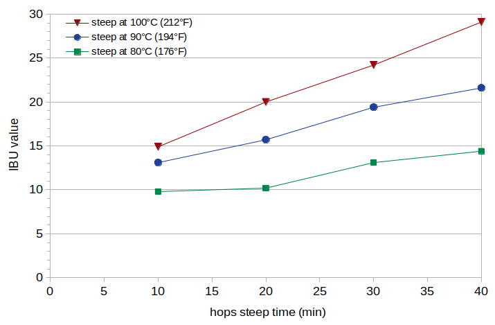
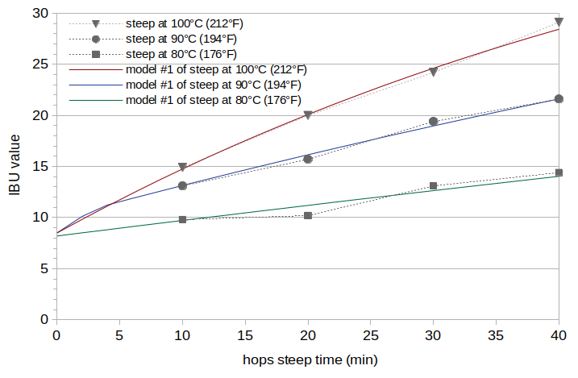
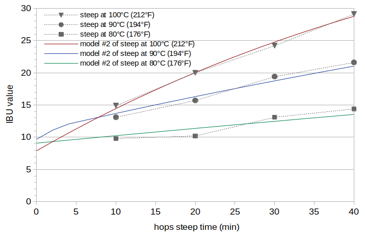
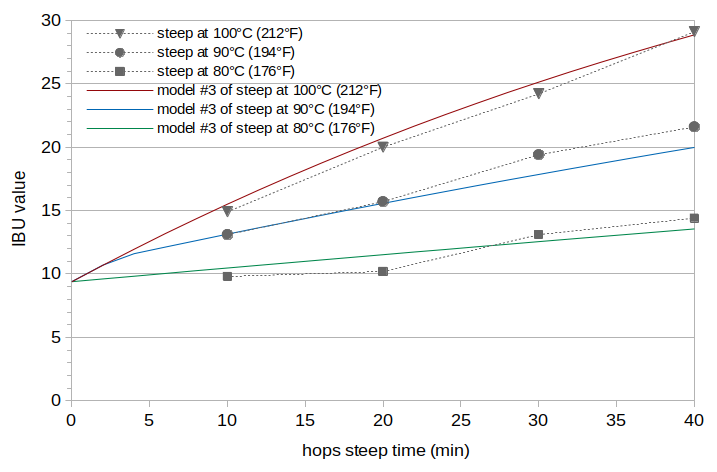

Abstract
The IBU combines the concentration of isomerized alpha acids (IAAs) and the concentration of "auxiliary bittering compounds" (ABCs) in beer into a single measure of approximate bitterness. While IAAs contribute the most to the IBU in typical beers, ABCs play a significant role and may have contributions greater than IAAs in very late-hopped beers. The auxiliary bittering compounds are composed of polyphenols, oxidized alpha acids, and oxidized beta acids. Oxidized alpha acids are produced as the hops age, but they are also produced in fairly large quantities during the boil. (There is evidence that the oxidized alpha acids produced during the boil are the second-greatest contributor to the IBU, after IAA.) It is known that temperature has a large effect on how quickly alpha acids isomerize, but it is not clear what impact wort temperature has on the production of oxidized alpha acids. This blog post estimates the concentration of oxidized alpha acids in finished beer from hops steeped at three temperatures: boiling (100°C or 212°F), 90°C (194°F), and 80°C (176°F). The results, while not definitive, indicate that these different temperatures do not yield significant differences in the production of oxidized alpha acids. Polyphenol levels in the beer samples were also measured in order to check previously-developed polyphenol models and provide supporting evidence that most of the ABCs are, as expected, probably coming from oxidized alpha acids and not from polyphenols.
1. Introduction
The IBU is a measure of the concentration of a number of different bitter compounds. (To be more precise, the IBU is a measure of the absorbance of light at 275 nm through acidified beer. A number of bitter compounds in beer absorb light at this frequency. The greater the concentration of these compounds, the more light is absorbed, and the higher the IBU.) In typical beers, the IBU value reflects mostly the concentration of isomerized alpha acids (IAAs) [Peacock, pp. 164-165], which are produced during the boil from alpha acids (AA). The other bitter compounds, known as "auxiliary bittering compounds" (ABCs), or nonIAA, are polyphenols, oxidized alpha acids, and oxidized beta acids. These compounds can be considered to be present in the wort soon after the hops addition [e.g. Dierckens and Verzele, p. 454; Askew, p. 18].
Alpha acids (without isomerization) "do not survive to any significant extent into beer" [e.g. Lewis and Young, p. 259] and are not bitter [Shellhammer, p. 169], but as they age and become oxidized, the resulting oxidized alpha acids (oAAs) are both soluble in wort and bitter [Algazzali, pp. 14-15, p. 19, p.45; Maye et al, p. 23; Hough et al., pp. 435-436; Hough et al., p. 439; Lewis and Young, p. 265]. Oxidized alpha acids are also produced during the boil [Parkin, p. 11, Algazzali, p. 17; Dierckens and Verzele, p. 454; Oliver p. 471]. A previous blog post has estimated that oxidized alpha acids (oAA) are the second-largest contributor to the IBU, after isomerized alpha acids, and that a typical beer may have equal contributions of IAA and oAA after about 10 minutes of boiling hops in wort. In beers brewed with large additions of hops at flameout, the IBU may be a measurement of mostly oxidized alpha acids.
While the impact of wort temperature on the rate of isomerization is well known [Malowicki, p. 27], the impact of temperature on the production of oxidized alpha acids is not known. (At room temperature, dry hopping will contribute oxidized alpha acids to the finished beer [Parkin, p. 30; Maye, p. 25], but it seems unlikely that there is much production of oAA. Instead, it is more likely that during dry hopping (most of) the oAA already present in the hops (coming from oxidation during storage) dissolve into the beer [Maye, p. 25].) If boiling transforms x% of the available alpha acids to oxidized alpha acids in the finished beer, then does steeping hops at 80°C (176°F) transform only 0.80 × x% of the alpha acids? Or, more generally, how do temperatures typically encountered in hop stands affect the oxidization of alpha acids, relative to oxidation at boiling? The purpose of this blog post is to answer this question.
When collecting data to answer this question, I also measured polyphenol concentrations as a way of testing the model of malt polyphenols proposed in the blog post The Contribution of Malt Polyphenols to the IBU and the model of hop polyphenols described in the blog post The Relative Contribution of Oxidized Alpha- and Beta-Acids to the IBU. To the extent that the polyphenol models accurately predict polyphenol concentration, we can have confidence in the models' estimate of the contribution of polyphenols to the IBU, and support (or contradict) the claim that oxidized alpha acids contribute much more to the IBU than other auxiliary bittering compounds.
2. The Concentration of Isomerized Alpha Acids in Beer
Mark Malowicki developed formulas to estimate the concentration of IAAs in the wort from the initial concentration of alpha acids [Malowicki, p. 27]:
| k1(T) = 7.9×1011 e-11858/T | [1] |
| k2(T) = 4.1×1012 e-12994/T | [2] |
| [IAA]wort = [AA]0 × (k1(T)/(k2(T) − k1(T))) × (e–k1(T)t − e–k2(T)t) | [3] |
| [IAA]beer = [IAA]wort × scalingIAA | [4] |
| IBU = 5/7 × ([IAA]beer + [ABC]beer) | [5] |
The concentration of ABCs in beer ([ABC]beer) can be expressed as the sum of the concentrations of the individual ABC components multiplied by appropriate scaling factors that relate each concentration to absorption at 275 nm:
| [ABC]beer = [PPmalt]beer × scalePPmalt + [PPhops]beer × scalePPhops + [oAA]beer × scaleoAA + [oBA]beer × scaleoBA | [6] |
Alternatively, we can express the concentration of ABCs in beer as the concentration of total hop particles added to the wort, multiplied by a single scaling factor that accounts for (a) the proportion of each ABC compound to total hop matter, (b) different absorption factors of these compounds, and (c) losses of each ABC to trub and during fermentation:
| [ABC]beer = [hops]wort × scalingABC | [7] |
We can estimate the scaling factors scalingIAA and scalingABC from equations [3], [4], [5], and [6] and measured IBUs of beer samples fermented from wort taken at different time points during the boil. This technique is described in the blog post Estimating Isomerized Alpha Acids and nonIAA from Multiple IBU Measurements.
4. Experimental Overview
To evaluate the production of oxidized alpha acids at hop-stand temperatures, I brewed three batches of beer (A, B, and C) with identical wort, hops, and yeast, and varied only the temperature at which the hops steeped in the wort. The total steep time was 40 minutes, and I took samples every 10 minutes. I fermented these 12 samples into beer, and had the IBU values of the finished beer measured by Oregon BrewLab.
I then used the technique described in Estimating Isomerized Alpha Acids and nonIAA from Multiple IBU Measurements to model the concentrations and scaling factors of IAA and ABC that contribute to the measured IBU values. In particular, the temperature T in Equations [1], [2], and [3] (above) was set to the steep temperature in order to account for the reduced rate of production of isomerized alpha acids at below-boiling temperatures. Using estimates of malt and hop polyphenol concentrations and their contribution to the IBU (described in The Relative Contribution of Oxidized Alpha- and Beta-Acids to the IBU) and ignoring the contribution of oxidized beta acids (due to their negligible concentration in finished beer when using well-preserved hops), I estimated the contribution of oxidized alpha acids to the IBU in each batch. These estimates were then examined for a relationship with wort temperature.
In addition, Oregon BrewLab measured the polyphenol concentrations at the 10-minute sample of all three batches and at the 40-minute sample of Batch A. I computed the expected malt polyphenol concentration using the model developed in The Contribution of Malt Polyphenols to the IBU and the expected hop polyphenol concentration using the model in The Relative Contribution of Oxidized Alpha- and Beta-Acids to the IBU, and compared the predicted with measured polyphenol values.
5. Experimental Methods
Each batch of wort was prepared from 2.53 lbs (1.147 kg) of Briess Pilsen Light Dried Malt Extract and 3.35 G (12.68 liters) of 120°F (49°C) low-alkalinity water, yielding 3.49 G (13.21 liters) of room-temperature wort. This wort sat for 90 minutes to let the pH stabilize. The pH was then adjusted to about 5.30 (at room temperature) using phosphoric acid. The measured pre-boil specific gravity was 1.032 for all three batches. The wort was boiled for 5 minutes before adding hops, in order to reduce the foam associated with the start of the boil. A 12-oz (0.35 l) sample of wort was taken after this 5-minute period to measure specific gravity and pH at around the time of the hop addition.
Just before adding hops, the temperature was reduced with the use of a wort chiller to the target steep temperature. For Batch A, the target temperature was boiling (100°C, 212°F) and no temperature reduction was made. For Batch B, the target temperature was 90°C (194°F). For Batch C, the target temperature was 80°C (176°F). This target was held as closely as possible throughout the hop steeping time.
I used 0.868 oz (24.6 grams) of Amarillo hops in this experiment with a package AA rating of 8.8%. These hops were harvested in Fall 2019 for the experiment in January 2020. The hops were analyzed by AAR Lab shortly after I received them, and they showed an alpha-acid (AA) rating of 9.56% and a beta-acid (BA) rating of 5.84%, with a hop storage index (HSI) of 0.272. To estimate the alpha-acid content at the time of brewing, I used the Garetz formula for estimating alpha-acid decay [Garetz] to obtain a decay factor of 0.96 and an alpha-acid rating at the time of the experiment of 9.21%.
After adding the hops, 16-oz (0.473 l) samples were taken every 10 minutes and quickly cooled in an aluminum cup and ice bath. The kettle was covered during the boil (or hop stand) to minimize evaporation and the resulting changes in specific gravity. Each sample was transferred to a sanitized quart (liter) container after it was cooled to 75°F (24°C). The wort in each container was aerated for 1 minute by vigorous shaking, and 0.008 oz (0.24 grams) of Safale US-05 yeast (age 11 months) was pitched to target 750,000 cells per ml and degree Plato. At the end of the 40-minute boil (or hop stand), another sample was taken for measuring specific gravity and pH.
Each sample fermented for 10 days (with a small opening to vent CO2). The krausen was left to deposit on the sides of the vessel during fermentation. I removed the krausen deposits one day before taking samples for IBU and polyphenol analysis by Oregon BrewLab.
6. Results
Unfortunately, I kept the hops in Batch B at boiling for the first 3 minutes of the boil, and only then decreased the heat to the target temperature. To correct for this, the models below use instantaneous temperatures and integrate IAA levels over time for Batch B, with a temperature of boiling for the first 3 minutes and the target of 90°C (194°F) after that, and so the effect of this mistake should be accounted for in the models.
The measured IBU values are plotted in Figure 1 with solid lines. The polyphenol concentrations are listed in Table 1.
 Figure 1. Measured IBU values at steep times of 10, 20, 30, and 40 minutes (horizontal axis) and at steep temperatures 100°C (212°F) (red line), 90°C (192°F) (blue line), and 80°C (176°F) green line.
7. Analysis
7.1 Model #1: Batch-Specific IBU Analysis
The first analysis (Model #1) used the technique described in Estimating Isomerized Alpha Acids and nonIAA from Multiple IBU Measurements to estimate scaling factors for IAA and ABC and use these scaling factors to model IBU values. We can identify the portion of the IBU value that comes from oxidized alpha acids by subtracting estimates of the malt and hop polyphenol IBU contributions and the estimate of the IAA contribution from the model IBU value. The results of this analysis are IAA scaling factors of 0.40, 0.49, and 0.59 for Batches A, B, and C, respectively, and a ABC scaling factors of 0.0048, 0.0047, and 0.0044 for Batches A, B, and C, respectively. The estimated oAA levels (expressed as the oAA contribution to the IBU) are 6.8, 6.7, and 6.2 IBUs for Batches A, B, and C, respectively. The RMS error over all values is 0.40 IBUs. The estimated IBU levels from Model #1 are plotted in Figure 2 with solid lines (red for Batch A, blue for Batch B, and green for Batch C). The estimated oAA levels decrease slightly with decreasing temperature. However, the IAA scaling values increase as the temperature decreases, and there is no clear reason for IAA scaling values to increase in this way. This suggests that the model is overfitting to the data, and that this trend is an artifact of the data and analysis technique.
 Figure 2. IBU values from Model #1 at temperatures 100°C (212°F) (red line), 90°C (192°F) (blue line), and 80°C (176°F) green line. The measured IBU values (from Figure 1) are plotted with gray markers and dashed lines for reference.
7.2 Model #2: IBU Analysis with Constant IAA Scaling
The results from analyzing each batch independently (Model #1) showed an unexpected increase in the IAA scaling factors as temperature decreases. All of these batches should, in theory, have the same scaling value for IAA; the kettle temperature should not influence the loss of isomerized alpha acids. I therefore repeated the estimation of IAA and ABC scaling factors, but constrained the value of the IAA scaling factor to be the same for all three batches. This analysis is called Model #2. The results of this analysis are an IAA scaling factor of 0.43 and ABC scaling factors of 0.0041, 0.0055, and 0.0051 for Batches A, B, and C, respectively. The estimated oAA levels (expressed as the oAA contribution to the IBU) are 5.8, 7.8, and 7.2 IBUs for Batches A, B, and C, respectively. The RMS error over all values is 0.60 IBUs. The trend that we are looking for, where oAA levels are constant or decrease as the temperature decreases, is not apparent. The estimated IBU levels from Model #2 are plotted in Figure 3.
 Figure 3. IBU values from Model #2 at temperatures 100°C (212°F) (red line), 90°C (192°F) (blue line), and 80°C (176°F) green line. The measured IBU values (from Figure 1) are plotted with gray markers and dashed lines for reference.
7.3 Model #3: IBU Analysis with Constant IAA and ABC Scaling
The results from enforcing a constant IAA scaling value across all three batches show no clear trend in oAA values with temperature. If the oxidized alpha-acid levels do not change significantly with temperature and the observed differences are all caused by experimental error, then we can constrain both IAA scaling and ABC scaling to be the same for all three batches, and evaluate if the resulting model error might be explained by experimental errors. This analysis, called Model #3, resulted in an IAA scaling factor of 0.40 and a ABC scaling factor of 0.0053, with an RMS error of 0.88 IBUs (about double that of Model #1 with no constraints). The estimated oAA levels (expressed as the oAA contribution to the IBU) are 7.5 IBUs for all batches. This constraint causes the model values for Batch A to be somewhat higher than observed values, and the model values for Batch B to be a bit lower than observed values at higher steep times. The estimated IBU levels from Model #3 are plotted in Figure 4.
 Figure 4. IBU values from Model #3 at temperatures 100°C (212°F) (red line), 90°C (192°F) (blue line), and 80°C (176°F) green line. The measured IBU values (from Figure 1) are plotted with gray markers and dashed lines for reference.
Can we explain this measured error (0.88 IBUs, compared with 0.40 IBUs for the unconstrained model) with plausible experimental errors? If we hypothesize that the differences are because the steep temperatures did not reach their targets, then it would take a steep temperature of 93°C (199.4°F) in Batch B (instead of the target 90°C/194°F) and a steep temperature of 83°C (181.4°F) in Batch C (instead of the target 80°C/176°F) to reduce the error to 0.44 IBUs. It seems possible that the temperature in the kettle was not uniform, but possibly higher at the bottom of the kettle (near the heat source) and lower at the top of the kettle (where I measured temperature). (It is also very likely that I did not reach exactly the target temperature over the entire duration of steeping, even after accounting for the mistake in Batch B.) Such effects might conceivably lead to a 3°C (5.4°F) difference between the average actual temperature and the measured temperature, although my gut feeling is that this is stretching the bounds of plausibility. If we hypothesize that the alpha-acid ratings varied between batches, then Batch A would have to be 8% lower, Batch B 7% higher, and Batch C 8% higher than expected in order to reduce the error to 0.50 IBUs. Alpha-acid ratings can vary 15% to 20% within the same bale of hops [Verzele and DeKeukeleire, p. 331], and it is worth noting that the measured AA rating of 9.56% is 9 percent higher than the package rating of 8.8%. So, it is also conceivable that the actual AA ratings in each batch varied by up to 8% from the expected value, but once again my gut feeling is that this is pushing the bounds of plausibility. If we have a combination of smaller differences in both temperature and AA rating (namely that Batch A has 4% lower AA, Batch B has a temperature of 91.5°C (196.7°F) and 3.5% higher AA, and Batch C has a temperature of 81.5°C (178.7°F) and 4% higher AA) then the error is 0.46 IBUs. Such errors seem plausible, but they are of course a hypothetical "post-mortem" explanation of the data.
7.4 Summary of IBU Analysis
A pattern of decreasing oAA levels with decreasing temperature is slight in the first model and does not exist in the other two models. There is also no easy explanation for the increase in IAA scaling factors with decreasing temperature in the unconstrained model (Model #1). If the model is adjusted to account for several small potential experimental errors, both IAA scaling and oAA levels can be held constant and result in a low overall error. Therefore, the data suggest, but do not prove, that the production of oxidized alpha acids is not greatly influenced by steep temperature. It is estimated that in this experiment, oxidized alpha acids contributed about 7 of the measured IBUs, regardless of the model, steep time, or steep temperature.
7.5 Analysis of Polyphenol Concentrations
In order to test the model of polyphenols developed in a previous blog post, Oregon BrewLab measured the polyphenol concentrations of four conditions: the 10-minute sample for Batches A, B, and C, and the 40-minute sample for Batch A. Results are listed in Table 1; these values are the sum of both malt and hop polyphenols.
| Sample | Measured Polyphenol Concentration (ppm) | Modeled Polyphenol Concentration (ppm) |
| Batch A, 10 minutes | 91 | 95.2 |
| Batch B, 10 minutes | 92 | 95.2 |
| Batch C, 10 minutes | 92 | 95.2 |
| Batch A, 40 minutes | 107 | 106.7 |
We can use the model of malt polyphenols with the model of hop polyphenols described in Section 4 of The Relative Contribution of Oxidized Alpha- and Beta-Acids to the IBU to estimate the total polyphenol concentration. For using the model of malt polyphenols at steep time 10, we have a boil time of 10 minutes, a specific gravity of 1.0342 and a pH of 5.31. For the model of hop polyphenols, we have 24.60 grams (0.868 oz) of hops added to 12.306 liters (3.25 gallons) of wort. These models predict 84.0 ppm of malt polyphenols and 11.2 ppm of hop polyphenols at 10 minutes, for a total of 95.2 ppm. Since this model does not depend on wort temperature, it predicts the same value for each batch at the 10-minute sample time. Changing the boil time to 40 minutes yields 95.5 ppm of malt polyphenols and the same 11.2 ppm of hop polyphenols, for a total of 106.7 ppm.
The model values of 95.2 ppm for all batches at 10 minutes and 106.7 ppm at 40 minutes are in good agreement with the measured values in Table 1. These results provide some confidence in how well these models predict malt and hop polyphenol levels.
8. Conclusion
While not conclusive, the data from this experiment indicate that hop steeping temperatures from boiling to as low as 80°C (176°F) do not result in significant differences in the production of oxidized alpha acids. Also, the measured polyphenol concentrations correspond well with the models of malt and hop polyphenols proposed in previous blog posts.
It is estimated that in this experiment, the oxidized alpha acids produced during the boil contribute more to the IBU than isomerized alpha acids up to about a 15-minute steep time. At the 10-minute steep time and boiling, it is estimated that the 14.9 measured IBUs reflect 5.6 IBUs from isomerized alpha acids, 7.8 IBUs from oxidized alpha acids, 1.3 IBUs from malt polyphenols, and 0.2 IBUs from hop polyphenols. At the 40-minute steep time and boiling, it is estimated that the 29.1 measured IBUs reflect 19.8 IBUs from IAA, 7.8 IBUs from oAA, and 1.5 IBUs from polyphenols.
9. Acknowledgment
I would like to sincerely thank Dana Garves at Oregon BrewLab for her attention to quality and detail that is reflected in the IBU and polyphenol measurements presented here and in previous posts.
References
Navigate to:
AlchemyOverlord home page